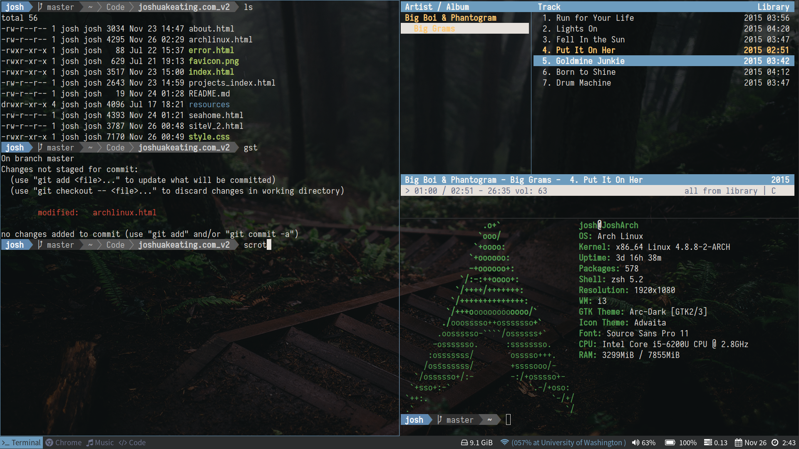

Arch Linux is the GNU/Linux distribution (distro) that I use as my main operating system. Arch is a minimal and lightweight distro that can be
configured by the user to suit their preferences. This is at odds with some of the other popular distributions (Ubuntu) which tend to feature more
streamlined installations and pre-configured environments.
Arch functions on a rolling release system of updates - meaning it gets updates to packages and the kernel much faster than other distros.
Because of this it is often referred to as the “bleeding edge distro”. Thankfully, Arch comes with its own package manager which makes managing
and maintaining your installed packages simple and easy. Arch is a great distro for someone who is comfortable with how Linux works and likes the
“Do it yourself approach”.
Reasons For Chooseing Arch
I chose Arch because I wanted something fast and lightweight to run on my laptop (XPS 13). I really liked the idea of a minimal base system that could then
be configured to my own ideal environment at an incredibly granular level. Forsaking the ease of use that a distro built around a GUI provides has increased
my productivity in the terminal and taught me more about how my system functions - which has been great. The documentation that the wiki provides
is some of the best out there for Linux distros so that was another major influence in my decision.
Pacman is a great package manager that couples simple binary packages with an easy-to-use package build system. This combined with the [core] repositories,
the AUR (Arch Linux User Repository), and the ability to easily “roll your own” packages makes for a fantastic system of managing and customizing packages, scripts, and repositories.
Arch’s power and simplicity appealed to me and although the initial install was a failure difficult, it has been a great operating system for more than a year.
My Setup

Pictured above is what one of my desktops currently looks like. I’ve tried to keep my install fairly lightweight, I use i3 for my windows manager, urxvt for my terminal
emulator, and ranger for my file browser. I get 7-8 hours of medium to heavy usage which is pretty solid and comparable to how it performs in Windows. Here are my
dotfiles if you are interested.
Favorite Packages
- i3 - A great tiling windows manager
- urxvt - terminal emulator
- ranger - file browser
- rofi - application launcher, dmenu replacement
- Visual Studio Code - text editor
- yaourt - pacman frontend
- Intellij IDE - best IDE
- Sublime Text 3 - text editor
- cmus - terminal music player
- gpmdp - Google Play desktop music player
- Spotify - music streaming platform
- zathura - lightweight pdf viewer
- feh - lightweight image viewer
- screenfetch - prints out system information
- xrandr - allows for screen output (multiple monitors)
- Iosevka - best terminal font
- polybar - a fast and easy-to-use status bar
- pass - a unix password manager
- powertop - powersaving tool by Intel
- RStudio - the one and only IDE for R